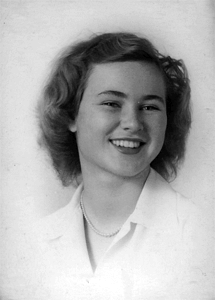
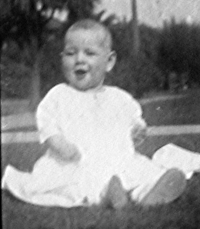
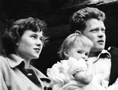
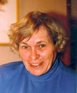

|  |
Muriel Joan Campbell Muriel Joan Campbell was born in Berkeley, California on March 30, 1929. |
|
|
Important
Facts
|
||
| March 30, 1929 | Born at the Alta Bates Community Hospital in Berkeley, California. She is the daughter of Agnes Jean Cox and Murray Archibald Campbell. Her parents were deaf. Source: Ancestry.com California Birth Index, 1905-1995. |  Joan Campbell5 months old |
| April 2, 1930 | The US Federal Census lists Murray Campbell (48), Agnes J. (39), John HC (11), and Muriel J. (1), living in Berkeley, Alameda, California. Source: 1930; Census Place: Berkeley, Alameda, California; Roll: 110; Page: 1A; Enumeration District: 289; Image: 1118.0. | |
| August 6, 1931 | Her father died in Berkeley, California of pneumonia, although he was very debilitated by tuberculosis. She was two years old and she was brought up by her mother. | |
| Joan loved animals and as a child, she rode her stallion horse all over the hills of what is now Walnut Creek, California. |
|
|
| Joan dated Byron Demott who was a Tennis Pro at Santa Barbara Country Club. | ||
| 1948 | Married Douglas Lee Nelson. | |
| June 8, 1948 | Lita Jean Nelson was born in Berkeley, California. | |
| 1949 | Joan married Knut Kristian Dahle who is Norwegian. In 1947, Knut went to the University of California, Berkeley as Freshman in architecture. |  Joan, Knut, and Lita1950 - Carmel Mission |
| October 3, 1950 | John Christian Gloor was born in Berkeley, California. | |
| 1952 | Divorced Knut Kristian Dahle in Mexico. | |
| 1954 | Married Joseph William Baber in Tijuana, Mexico. | |
| Oct. 8, 1954 | Michael Murray Baber was born in San Diego, California. | |
| April 8, 1958 | James Lawrence Baber was born in San Rafael, California. Died of spinal meningitis at 3 years old. | |
| August 21, 1959 | Married Herbert Emil Gloor in Berkeley, California. |  Joan Campbell Gloor |
| May 28, 1960 | Louise Zellie Gloor was born in Berkeley, California. Her parents were living at 1159 Arlington Way, Martinez, California. | |
| November 6, 1961 | David Emil Gloor was born in Berkeley, California. | |
| August 19, 1976 | Joan's mother, Agnes Jean Campbell died at the Alta Bates Community Hospital in Berkeley, California. | |
| While living in Berkeley, Joan managed the Mariposa Auto Court that her mother had bought in 1959. The named changed later to Mariposa Lodge. | ||
| 1987 | Joan and Herb moved to Mariposa to semi retire and run the Mariposa Lodge. | |
| 1988-2007 | Joan and Herb raised Swiss Mountain show dogs and won blue ribbons in many conformation classes. She served on the boards of the Chamber and the Economic Development Corporation. Joan also donated property to the Mining and Mineral Museum. | |
| October 8, 2007 | Joan Gloor died peacefully and without pain between 6:30 and 7:00 p.m. at home in bed on Veteran's Day. | |
| October 11, 2007 | Leroy Radanovich wrote an article about Joan in the online Sierra Sun Times. Source: Sierra Sun Times: Leroy Radanovich's Mariposa Life. | |
| October 12, 2007 | Joan's obituary appeared in the Mariposa Gazette weekly newspaper. Source: Mariposa Weekly Gazette. | |
| October 19, 2007 | A 2 PM memorial service was held at the Mariposa Funeral home with Rev. Cuck & Marilyn Kendall officiating. |